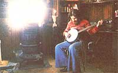
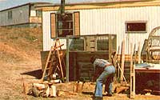

Living in an urban trailer court didn't stop Jay Williams from working toward self-sufficiency, because he made up his mind to . . .
Do you get pangs of jealousy whenever you read articles about folks who're raising, eating, and putting up their own vegetables . . . while the only thing you're growing is another day older? Do you dream of warming your hands beside a wood stove . . . every time you turn up the furnace thermostat?
Can you tell your friends all the ins and outs of solar collectors . . . but find no time or space to build your sun-catcher? And are you piggy-banking funds for your very own back forty . . . while you wonder if you'll ever be able to afford a front "one or two"?
Well Bunky, perhaps you should quit making excuses and start building that new life right where you are! I'm not just spitting into the wind, either, 'cause I know-from my own experience-that it can be done! You see, my lady friend and I grow and put up veggies, raise and eat small livestock, and heat our home with wood and our water with sunshine . . . yet we live in a 100-unit trailer court that's smack in the middle of an 85,000 person metropolis!
My "citysteading" success story began when I abandoned life as a smog-breathing, money-grubbing Los Angeleno and headed out for some longed-for rural living in the Trinity Alps of northern California. Unfortunately, after nine months of hard knocks in the sticks, I realized that-though I had the necessary enthusiasm-I sorely lacked homesteadin' knowledge. I just wasn't ready to live in the country yet.
Still, I didn't like the thought of facing the L.A. treadmill again, so I migrated to a friend's town: Sioux City, Iowa. And there-in the aforementioned trailer court-I hooked up with a fine young woman named Angela and her four-year-old son, Terence. Unfortunately, the funds we pooled that autumn were "minute" (hers), "minuter" (mine), and "minutest" (Terence's). So-like it or not-we were pretty much forced to adopt some homesteading-type steps toward independence.
Angie and I began our move toward self-sufficiency by scouring back issues of THE Mother Earth News(restricted) (I'd introduced her to my collection back when we started sparkin' ). And the articles in dear of MOTHER convinced us that our initial moneysaving step should be to cut down on what would surely be some humongous winter heating bills. And thus-into our chilly "home, mobile home"-entered . . .
I dug my 1895 cast-iron wood-burner out of storage (I had practically abandoned the "worthless" old relic) and installed it according to the local safety regulations for trailers. That operation was easy enough, and-before long-we were all set for snow season . . . except for one little thing: wood. Here it was fall already, and we had no chain saw or available firewood! But-not a whit deterred-Angie and I solved that problem by "citifying" a time-honored country custom: barter. I merely called local tree removal businesses until I found one that was willing to deliver loads of dry wood to our mobile domicile. You see, those urban wood-chopping folk often have to pay a trash yard for the privilege of dumping their timber trimmin's. So I saved them money, and they gave me wood. A nice trade, no?
The swap was so successful, in fact, that in only one week-I "gathered" four LARGE loads of elm. The hardwood chunks were far from stove size, however, so I found a friend with a chain saw and swapped his assistance for a share of the cuttin's. After two days of hard work, we both had plenty of firewood for the winter.
And a snug season we had, too! Angie and I had installed the antique wood-burning heater in the north end of our trailer, so-with the help of the prevailing north wind and a small, air-circulating floor fan-the warmth from that toaster spread pretty much all the way down our long-but-lean home. (Well . . . I have to admit there was one night-when the wind-chill factor dropped the temperature to the equivalent of -70°F-that the whole family slept right next to the stove!)
Of course, any wood-burner accumulates lots of ashes. But-as it turned out-staring at three big trash bags' worth of those flaky leftovers prodded us on to our next stage of citysteading. You see, when I said, "There must be something we can do with all these ashes," Angie replied, "Gee, I read an article in MOTHER that said we could use 'em on a garden," and that led to . . .
Now planning a garden might not seem like a very original thought, but you have to remember that we were living in a stark urban trailer court. And when I say stark, I mean STARK. The bulldozers that "terraced" the land for our mobile community had removed all the usable soil and left the entire area topped by that scourge of the Missouri Valley . . . gumbo.
For those of you who have never had the honor, allow me to introduce said scourge (as politely as I can manage). Gumbo is a clay ground (you wouldn't call it soil) which-when wet-gets so slick that a full-loaded pickup truck running snow tires and chains will get stuck on a two-percent downhill grade! On the other hand, the substance becomes so bricklike when it's dry that you could sharpen a knife on it . . . and the local moles all have to move into trees! In fact, the only plants that can grow in this life-denying medium are the hardiest of weeds.
As you can imagine, when we bragged to our neighbors on how we figured to raise a deluxe vegetable patch in our gumbo "yard", folks laughed so hard our whole trailer shook. But Angie and I just ignored 'em and stuck our noses back in the books. We studied our issues of MOM-as well as every other how-to-garden tome we could get our hands on-then we picked out our croppin' spot, "sowed" the stove ashes, began "brewing" compost (in plastic trash cans so the local canines couldn't get to it), and ordered seed catalogs.
When the winter broke, we plopped our compost on the garden (along with a free load of manure from a local stockyard) and then-with difficulty-hand-spaded our 12' X 25' vegetable heaven. We next rented a rototiller (we'd both finally landed secure jobs so we had a little money) and found that-surprise our compost and manure treatments had made the ground downright tillable. After that, we parted with even more money and bought some posts and fencing to keep out the dogs, cats, and-most especially-the "mini-people".
A brief aside here about those last mentioned banes of the urban gardener: Mini-people (sometimes called "kids" by townsfolk who forget how that particular moniker's meant to refer to young goats) may be lovable tykes, but let's face it-children can pull vegetable raids that'd put a herd of wild woodchucks to shame! Angie and I decided to protect our plantings with a natural "finger blight" deterrent . . . namely, the sacrificial offering. We raised cherry tomatoes along all our fencing, and let it be known that any ripe little "toe-me-toes" were free for the grabbin'. And our "natural pest control" worked . . . the youngsters were content with their one-bite treats and stayed away from our more adult-sized vegetables.
And now, back to the story.
By this time, Angie and I were both eager to get our crops growing. But all the local back porch experts kept saying, "Don't plant now. We've got at least one hard frost-maybe even snow-acomin'." This being our first on-our-own garden and all, we were naturally a little shy about going against such advice . . . so we didn't get our seeds in the ground until five days before summer!
And I guess I might as well tell you now that the end result of all the caring labor we put in during the next three months wouldn't exactly have stocked a frontier family's winter pantry. You see, the late planting ruined our chances for eggplant, lettuce, and watermelon crops . . . then a Midwest-wide plague of grasshoppers chewed up most of our carrots, beets, peas, and snap beans. Still, we did gain a respectable samplin' of eats (plus a whole lot of growing experience) and on top of that-reaped a surprise "bonus" crop of volunteer tomatoes that sprouted up from our compost leavings. So I'd have to say we garnered a "right fair" first harvest. We even gleaned enough pickin's so we could try our hands at that time-honored urbansteader's chore . . .
Now I confess that neither one of us back-to-the-cityites had very much food-preserving background, but-as you've probably figured out by now-we never let a lack of experience keep us from tackling any chore. Even the fact that Angie had obtained a night-shift job (while I labored during the day) didn't slow us down. We just worked out a separate-but-equal canning assembly line!
I'd come home in the evening and pick, wash, and stack the day's ripe produce. The following morning (while I was at work), Angie'd gather up books, jars, canning gear, worry beads, the phone (to call friends for advice) and . . . (gulp!) . . . can! The next day, Ang'd do the picking, washing, and stacking. Then-when I got home-I'd grab the books, phone, canner, and worry beads . . . and take my chances.
When we finally saw each other-on weekends-all we could talk about was, "Where did you get that idea?", "Wow, did you write that down?", and "Oh! So that's the way you're supposed to do it! "
The total result of our split-shift enterprise included over 44 quarts of canned and pickled tomatoes (those "bonus" volunteers turned out to be small, hard-skinned tomato mutants that took days to peel), 3 quarts each of zucchini pickles, a zesty zuke-onion-tomato mix, cucumber pickles, and snap beans (if you ever want to grow a treat for your neighborhood's grasshoppers, try snap beans) . . . as well as 2 pints of pickled beets. Don't laugh at those meager-sounding amounts, either, because the experience taught us how to handle the particular quirks of each of our food products (and we didn't lose one jar to spoilage all winter! ) . . . plus, we sure enjoyed eating our stored-up harvest.
In fact, we had an especially wonderful Thanksgiving that fall because-on that blessed day-we opened our first homestored foodstuffs. Terence, Angie, and I sat down to tasty vegetables from our garden, bread and pies from our oven, heat from our wood stove, and that savory duck from our . . . . Oh my gosh! I forgot to tell you about . . .
Actually, it's probably just as well that I didn't mention the ducks before. Maybe if I take each of our projects to completion before telling you about the next one, you (and I) won't get too confused.
Our venture into citystead duck raising had started-way back 'round Easter -when young Terence received a little yellow ball of quacking fluff. Since that spring's weather was pretty darn brisk, the persistent honker had to live indoors. At that point three people-and one large, half-wild tomcat-had to share their already crowded home with a noisy little box wetter (named Peeper) . . . and believe me, that's no way to live in a trailer.
Angie and I had already decided that we would expand our garden next year (which-since we hadn't even planted the first plot yet-showed no little confidence), so we decided to build an outdoor duck pen at the to-be-enlarged end of our veggie patch . . . and let Peeper help "build" the soil. Then, seeing as how of Peep was for petting-not for eating (the bird did belong to Terence, after all)-we bought ourselves five more "dining" ducks.
We put all six waterfowl in a large-Board-of-Health-approved-homemade pen and covered the top of the cage with chicken wire to keep out the dogs and mini-people. Unfortunately, though, the local youngsters couldn't resist the impulse to come and "play" with our birds when no one was around . . . so we eventually lost two ducks to mishandling and two more to dogs (when the little visitors left the gate- open). Still, two female birds made it through the summer, so we were able to spare one duck for Thanksgiving dinner. And let me tell you, that waterfowl was the best eatin' I ever had. Except, perhaps, for the rabbit. Yep, I did it to you again. Now it's time to tell you about . . .
Once again I'll have to backtrack to begin this tale and-also once again-it was an Easter present to Terence that started the whole thing. This time, the boy received a female (Giant Silver Champagne) fur bearer ... of Bad Habit rabbit.
I figured that-using Bad Habit as a breeder-we could soon raise zillions of fluffy dinner bunnies by simply building a hutch, locating a male "stud" rabbit, and then honin' up the cutlery. Unfortunately, I read about hutch building before I read about rabbit raising. So I built a fine, large cage and then learned that the proper breeding season for bunnies wouldn't come around until the following winter! There was nothing to do but buy another female to raise for the current season's dinner table and try to keep Bad Habit-the starter rabbit-out of trouble until the next year. At least the new bunny (who met her demise via the rabbit-butchering instructions in MOM's Issue No. 15, pages 18-23) did make for some mighty fine eating.
Besides wood heating, gardening, canning, and duck and rabbit raising, Angie and I found several other ways to further our self-sufficiency campaign. For one thing, I scrounged up an old refrigerator and constructed a single-loop passive hot water system (from the plans on page 108 in MOTHER NO. 48, of course) that supplied all our household's water heating needs. (I had to store the device when winter came on, but plan to have MOM NO. 49's freezeproof double-loop heater built by next year . . . complete with a solar-tracker!)
We also-like true-blue citysteaders-employed ye of barter principle whenever possible. For instance, I lent my .22 rifle to a weaponless hunting friend and was rewarded with half the game he shot. I also traded extra garden produce for other goods we needed, and hooked into a local food co-op to swap my work time for discounts on quality, affordable foodstuffs.
All in all, Angie and I not only proved that you can employ a lot of so-called "country" skills in the midst of Urbania . . . we also realized a considerable saving on our heating and feeding bills and got to enjoy some darn good homegrown victuals in the bargain. And, if you think we've done pretty well so far, just wait till next year . . . because I tell you, the two of us have got some BIG plans for the future.
So friends, if you're nesting in an urban area, don't sit on your duff thinking that the good MOTHER-type lifestyle belongs only to those rustics livin' way out in Sticksville. No sirree bob, the good life comes to those who make the good life, no matter where they've pitched camp. My advice to you is to begin taking more control of your life. Get a move on . . . and pronto: After all, if you plan to become successful citysteaders-as we have-you'd better get started.
You're already one year behind us.
EDITOR'S NOTE: The back issues of this publication mentioned in the above article are available-for $3.00 apiece plus $1.00 shipping and handling per order-from THE Mother Earth News(restricted), P.O. Box 70, Hendersonville, North Carolina 28789
|
 |
 |
|